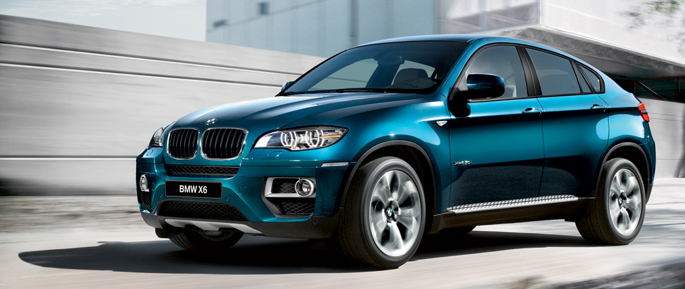

Porshe Cayenne

more images
| |
|

more images |
BMW X6 — среднеразмерный кроссовер, выпускаемый компанией BMW. Он сочетает в себе как признаки внедорожника (полный привод, большой дорожный просвет, большие колёса, тяговитый двигатель), так и признаки купе (сильный скос крыши в задней части автомобиля). Сама компания классифицирует данный автомобиль как Sports Activity Coupé(SAC) — спортивное купе для активного отдыха. |
| |
|
more images |
Porsche Cayenne — пятиместный среднеразмерный спортивный кроссовер производства немецкой автомобилестроительной компании Porsche. Автомобиль создан при активном участии концерна Volkswagen. Производство первого поколения (Type 955/9PA) началось в 2002 году, в Северной Америке реализация началась с 2003 года. Название модели, Cayenne, образовано по имени столицы Французской Гвианы. |